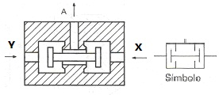
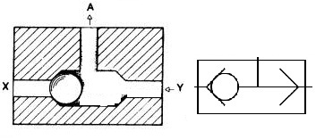
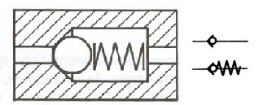
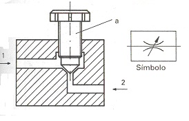
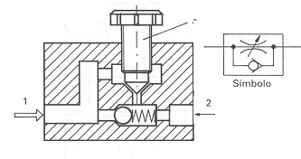

|
 Para
saber más Para
saber más |
|
Válvulas lógicas
|  |
VÁLVULA Y
Estas válvulas se usan como elementos de seguridad, en mandos en los que es preciso ocupar las manos del operador cuando se acciona una máquina o mecanismo, como sucede en prensas o guillotinas.
La válvula tiene dos entradas, X y Y, y una salida. El aire puede pasar sólo cuando tengo presión en las dos entradas a vez. Sí sólo tenemos una señal, la salida va a quedar bloqueada. |
|  |
VÁLVULA O
Estas válvulas se usan cuando se precisa una señal de presión de salida desde dos puntos de entrada diferentes. Si el aire entra por Y del orificio de la derecha, comprime la bola contra el asiento del otro lado (X) y sale libremente por A. Si ahora entra por X del orificio de la izquierda, la presión desplaza la bola hasta el asiento de la derecha (Y), cerrándolo y permitiendo la salida del aire por A. |
Válvulas de control de flujo |
|  |
VÁLVULA ANTIRRETORNO
Son elementos neumáticos que permiten el paso del aire en un sentido sin casi pérdida de presión, impidiendo el paso del aire en el sentido contrario. La obturación la podemos obtener con un cono o con una bola, incorporando o no un resorte antagonista. Si son de resorte, el aire tiene que vencer una cierta resistencia, antes de abrir el paso en el sentido de circulación. |
|  |
VÁLVULA REGULADORA DE CAUDAL
El caudal o cantidad de aire que pasa por una conducción, se regula disminuyendo la sección del conducto. Este caudal puede ser regulado en los dos sentidos de circulación del aire, o bien en uno sólo.
|
|  |
VÁLVULA ANTIRRETORNO Y REGULADORA CAUDAL
Combina el uso de las dos anteriores, permitiendo el paso libre en un sentido, y la regulación de caudal en el otro. |
|
|
|